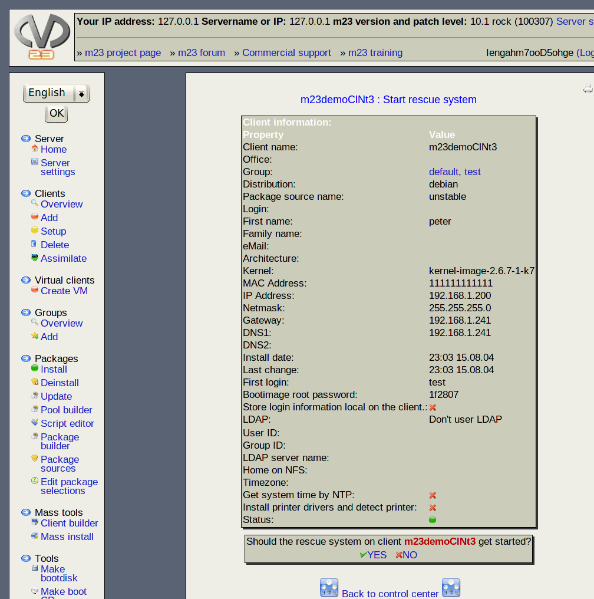

If you want to start a client for repairing or diagnostic purpose, you can boot the rescue system over the network. After the network boot the client starts a console that allows you to do your work. To start the rescue system click on "Rescue system" after the client name.

Subsections
root
2013-08-18